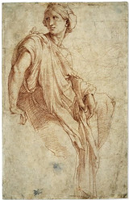

| |
Photographs can
be ordered of any of the works in the collection of the Department of
Prints and Drawings.
High quality digital
images are available on the online picture library at www.bmimages.com.
This web site enables picture researchers, buyers and members of the
general public, to search for images of objects held in the Museum’s
collections and to purchase high resolution digital images online using
a credit card. Customers who wish to purchase digital images are advised
to look first of all at www.bmimages.com
to see if the image is available on the web site – if so they can complete
the purchase and download the image via the web site using a credit
card as a payment method.
Since only a limited
number of works are available in this way, all other images of objects
in the Department of Prints and Drawings, need to be ordered through
the Department, whether as digital files or photographic prints. Please
email us at printsphoto@thebritishmuseum.ac.uk.
We are responsible
for identifying the works and for making out the orders; invoicing is
the responsibility of the Accounts Department; and the actual production
and posting of the photographs is done by the Department of Photography
and Imaging (photographic@thebritishmuseum.ac.uk).
Please remember
that we do not have a complete stock of photographs for browsing, and
we cannot undertake picture research. Those who want a generic illustration
of (say) an early windmill, or a print after a painting by Sir Joshua
Reynolds, must come in and do their own research, or go to one of the
commercial picture libraries established for this purpose in Britain
and abroad.
Identifying the
works needed can take a long time, and it is very helpful to us (and
speeds your order) if you can give as much information as possible when
placing an order. At a minimum we need to know the name of the artist,
whether the object is a drawing or a print, and a title or reproduction
(note that faxed reproductions usually emerge as bleary smudges). Ideally
we would also wish to have the register / inventory number, a reference
to any standard catalogue, and a note of the location (that is the series
and size in which we place the work in our collection).
When your order
has been received you will be sent a pro-forma invoice, and photographic
work will only commence after payment has been received. Producing photographs
or digital files can take up to two months (depending on the pressures
on the Department of Photography and Imaging), and if you need to speed
matters, it is advisable to add a credit card mandate to your order
so that production of your order is not delayed by the need to wait
for payment. We do not offer any rush service at a premium price.
Since all photographs
have to made individually, they are inevitably expensive. Prices are
less if we already have a negative or digital file. Photograps are produced
for scholars and the general public as a public service, and the prices
are set to recover only the actual costs to us in making the photographs.
Pricelist.
When placing an
order you should explain why the photograph is needed. If it is for
your own study, simply tell us it is for private study. If it is for
reproduction, you must give further details. In general permission is
almost always given to reproduce photographs, but a fee may be charged
if there is a commercial purpose. The scale of fees depends on the size
of the reproduction, whether it is in colour or black-and-white, and
whether it is for a book or some other medium such as television. Fees
are waived if the publication is non-commercial and of a scholarly nature,
but written permission has to be obtained in advance.
Photography is permitted
of works in display in our exhibition galleries, unless they have been
lent to us and the lenders have refused permission for public photography.
We do not have the facilities or staff to enable outside photographers
to take photographs of works in the Study Room. Press, television and
film companies need to make special arrangements through the Press Office.
please contact: printsphoto@thebritishmuseum.ac.uk
|
|

Raphael,
Study for the Phrygian Sibyl, red chalk, around 1511-12
|
|
|
|